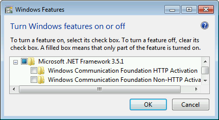
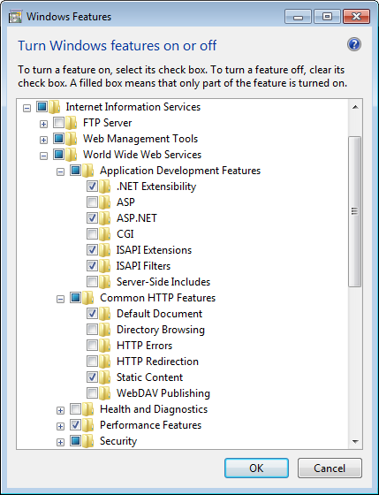

Figure 3. Windows 10 .NET components
Rapid SCADA requires certain Windows components to be installed. Go to Control Panel > Programs > Turn Windows features on or off. The required compontns of Microsoft .NET Framework are shown in Figures 1 and 3. Pay attention that Windows Communication Foundation child components of Microsoft .NET Framework 3.5 must be turned off.
The Webstation application requires Internet Information Services (IIS) that is a one of Windows features. Webstation would be inoperable unless the set of certain IIS features were turned on. Figures 2 and 4 show what features have to be installed. During the web application setup the availability of these features is checked by the installer.

Figure 1. Windows 7 .NET components

Figure 2. Windows 7 IIS components
Figure 3. Windows 10 .NET components

Figure 4. Windows 10 IIS components